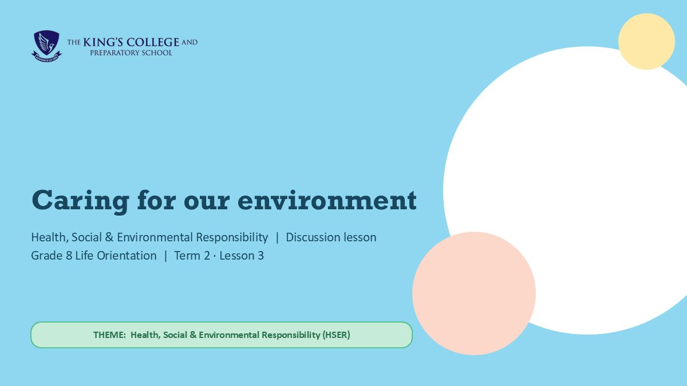
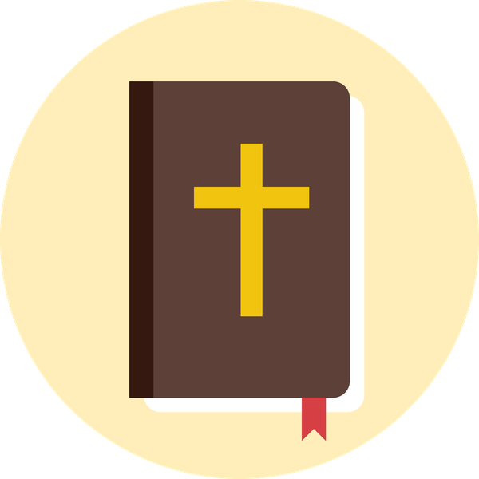

Term 2 · Lesson 3 · Discussion lesson
Caring for our environment
Start here
Today I will
- Describe environmental health problems in South Africa
- Explain my right to a healthy environment
- Plan one class action to care for our environment
Look at the photos. Which place would you least like to live next to, and why?
Words to Know
| Word | Meaning |
|---|---|
| Environment | Everything around us: air, water, soil, plants, animals and the places where people live. |
| Environmental health | How the air, water, soil and food around us affect our health and well-being. |
| Pollution | Harmful substances or waste that make the air, water or land dirty or unsafe. |
| Sustainable development | Meeting our needs today without harming the ability of future generations to meet theirs. |
| Recycle | Turning used materials (paper, plastic, glass, cans) into new products. |
| Earth Day | A worldwide day on 22 April (since 1970) to act for a cleaner, healthier planet. |
Slides

Videos
Notes
Clean air, clean water and safe places to live are not luxuries: they are what keep us healthy. In South Africa many people live with smog, polluted rivers and piles of rubbish. The Constitution gives everyone the right to a healthy environment, and each of us has a part to play in protecting it.
What is environmental health?
The environment is everything around us: air, water, soil, plants, animals and the places where people live. Environmental health is about how these things affect our health and well-being. When the air is full of smoke, people get asthma. When rivers are full of sewage, children get diarrhoea. When rubbish piles up, rats and flies spread disease. Looking after the environment is therefore also looking after people.
Environmental health problems in South Africa
| Problem | Causes | Effects on health and well-being |
|---|---|---|
| Air pollution | Coal power stations (especially in Mpumalanga), factories, car exhaust, burning rubbish and coal fires at home | Asthma, bronchitis and other lung diseases; worst for children and older people |
| Water pollution | Sewage from broken treatment works, litter, chemicals from mines and factories (e.g. the Vaal and Jukskei rivers, Hartbeespoort Dam) | Diarrhoea, cholera and skin infections; fish die; water becomes expensive to clean |
| Land pollution and waste | Littering, illegal dumping, too much plastic, e-waste (old phones, batteries) | Rats and flies spread disease; blocked drains cause flooding; toxic chemicals leak into soil |
| Water shortages | Droughts, a growing population, leaking pipes and wasting water | Not enough clean water for drinking and hygiene; Cape Town nearly ran out of water in 2018 ('Day Zero') |
| Climate change | Greenhouse gases from burning coal, oil and gas | Heatwaves, droughts and severe floods (e.g. KwaZulu-Natal in 2022); crop failure and food shortages |
| Loss of natural habitats | Cutting down trees, building on wetlands, overgrazing | Fewer plants and animals; wetlands no longer clean water or prevent floods |
Poorer communities often suffer most, because they are more likely to live near factories, mines or dumps, and have less access to clean water and refuse removal.
My right to a healthy environment (section 24)
Section 24 of the Bill of Rights gives everyone the right "to an environment that is not harmful to their health or well-being" and to have nature protected for people living now and for those not yet born (Constitution of the Republic of South Africa, 1996, s 24). The government must make laws and take steps to prevent pollution, protect nature and make sure that development is sustainable.
- The National Environmental Management Act (NEMA, 107 of 1998) is the main law that puts section 24 into practice.
- Other laws control air quality, waste, protected areas and the coast.
- Municipalities must provide refuse removal, clean water and sanitation.
- Every right comes with a responsibility: if we have the right to a clean environment, we have the duty not to pollute it.
Sustainable development
Sustainable development means meeting our needs today without harming the ability of future generations to meet their needs. For example, a town may need a new shopping centre, but it should not be built on a wetland that cleans the town's water. Using solar power, saving water and recycling are all examples of living sustainably.
What can I do? Reduce, reuse, recycle
| Action | What it means | Examples at home and school |
|---|---|---|
| Reduce | Use less in the first place | Say no to plastic bags and straws; switch off lights and taps; take shorter showers |
| Reuse | Use things again instead of throwing them away | Refillable water bottles and lunch boxes; scrap paper for notes; give old clothes away |
| Recycle | Separate materials so they can be made into new products | Separate paper, plastic, glass and cans; recycle old batteries and phones at collection points |
| Speak up | Report problems and get others involved | Report illegal dumping or leaks to the municipality; join a clean-up; start a recycling project |
Earth Day
Earth Day is celebrated around the world on 22 April. It started in the United States in 1970, when millions of people protested against pollution. Today schools, churches and communities use the day for clean-ups, tree planting and learning about the environment. In South Africa we also mark Arbor Week in early September and World Environment Day on 5 June.
Planning a class or school action
- Choose ONE problem (e.g. litter on the field, wasted water, no recycling).
- Set an objective (a broad aim: 'a cleaner school') and a measurable goal ('half as much litter by the end of term').
- Make an action plan: what will be done, by whom and when.
- Educate and involve others: posters, an assembly announcement, class monitors.
- Check whether it worked and improve the plan.
A biblical view
Genesis 2:15 (NIV) says God put the first people in the garden 'to work it and take care of it'. The earth belongs to God (Psalm 24:1), and we are stewards, or caretakers, not owners. Caring for creation honours God and also shows love for our neighbours, because pollution harms people.
How pollution reaches our bodies
Pollution affects health in three main ways. We BREATHE it in (smoke, smog and dust go into the lungs), we DRINK or EAT it (germs and chemicals from polluted water get into drinking water and food), and we LIVE with it (rubbish attracts rats and flies that spread disease, and blocked drains cause flooding). Children are especially at risk, because they breathe faster, play outside and their bodies are still growing.
Who is responsible?
| Who | Responsibility | Example |
|---|---|---|
| Government | Make and enforce environmental laws | NEMA; fining companies that pollute rivers |
| Municipality | Refuse removal, clean water, sewage treatment | Weekly rubbish collection; fixing leaking pipes |
| Businesses and factories | Follow the law and reduce pollution | Filters on chimneys; safe disposal of chemicals |
| Schools | Teach and set an example | Recycling bins, water-saving taps, eco-clubs |
| Individuals | Don't pollute or waste; speak up | Pick up litter; report dumping; save water |
Case study: Mia's water challenge
Mia noticed that the taps in the Grade 8 bathrooms were often left running and that two of them dripped all day. She remembered learning about Cape Town's 'Day Zero' and worked out, with Aarav's help, that a dripping tap can waste thousands of litres a year. Together with Thabo they made posters ('Every drop counts: turn it off'), asked the school's maintenance team to fix the leaks, and asked their class to check the taps after every break. By the end of the term the taps were fixed and the class had a monitor roster. Mia said, 'It was a small thing, but small things add up.'
Questions to think about: Which right and which responsibility does this case study show? Which of 'reduce, reuse, recycle' did the friends use? What measurable goal could they have set?
E-waste: the hidden problem
E-waste is old electronic equipment such as phones, chargers, laptops and batteries. It contains metals such as lead and mercury that are poisonous when they leak into soil and water. Never throw batteries or old phones in the normal bin. Many shopping centres and electronics shops have collection points where e-waste can be recycled safely.
Worked exam answers
Question: Explain how air pollution can affect a community's health. (1 x 2) (2)
Answer: Smoke from factories or burning rubbish puts harmful particles into the air people breathe ✓, which can cause asthma and other lung diseases, especially in children and older people ✓.
Question: Recommend ONE way a school can reduce waste. Explain how it works and what the result could be. (1 x 3) (3)
Answer: Put separate recycling bins for paper, plastic and cans in every class ✓, so that learners can sort waste instead of throwing it all away ✓, which means less rubbish goes to landfill and the school is cleaner ✓.
Know what section 24 says (word for word is best), be able to explain how ONE environmental problem affects health (cause + effect), define sustainable development, and recommend actions with a result.
A healthy environment is my right, and caring for it is my responsibility.

God put the first people in the garden 'to work it and take care of it'. What does taking care of creation look like at our school?
In class: Our class action plan
- Choose ONE environmental problem at our school (litter, wasted water, wasted paper, no recycling).
- Write a goal you can measure, e.g. 'Half as much litter on the field by the end of term.'
- List three actions and who will do each one.
- Decide how you will check whether it worked.
- Each group shares its plan in one minute.
Test yourself
- What does section 24 of the Constitution say?
- Name TWO types of pollution and one health effect of each.
- What is sustainable development?
Show answers
1. Everyone may live in surroundings that do not damage their health or well-being, and nature must be protected for people today and in the future. 2. e.g. air pollution: asthma or lung disease; water pollution: diarrhoea or disease. 3. Meeting our needs today without harming future generations' ability to meet theirs.
Finished early?
Plan one small action to care for the environment at home.
- Choose ONE problem at home, such as wasted water, too much plastic or lights left on.
- In your LO book, write an objective (a broad aim) and a measurable goal.
- List three actions: what will be done, by whom and when. Label each as reduce, reuse, recycle or speak up.
- Write how you will check, after two weeks, whether it worked.